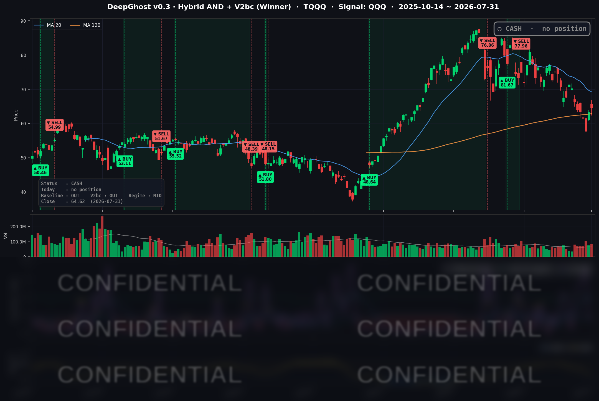

👻 매일 시그널과 히스토리를 홈페이지에서 한눈에 → www.ghostai.co.kr
나스닥 지수는 올랐지만 오른 종목은 절반도 되지 않았고, 30년물 국채금리는 19년 만의 최고치를 찍었습니다. 10년물이 4.7%를 넘었습니다. 금리가 기술주를 가로막고 있는 상황입니다. 기다리세요.
📊 오늘의 매매 신호
| 항목 | 내용 |
|---|---|
| 오늘 할 일 | ✅ 아무것도 안 해도 됩니다 |
| 포지션 상태 | 💵 현금 보유 중 (OUT OF POSITION) |
| 현금 보유 기간 | 2026-06-29 ~ 2026-07-31 (24거래일) |
| TQQQ 종가 | $64.62 (+2.09%) |
신호축인 QQQ의 핵심 지표는 진입 조건선에 들어왔지만 아직 방향성을 잡지 못하고 있습니다. 장마감 후에 선물에서는 이날 상승분을 다 되돌렸내요. 맘 놓고 주식을 사기에는 불안한 시장 환경입니다. Ghost.AI는 모든 시장 상황을 다 놓고 판단합니다.
TQQQ 시그널 — OUT OF POSITION
현재 상태: 현금 보유 중 | 신규 진입·청산 신호 없음

우리 모델이 하는 일은 미래를 예측하는 것이 아니라, 모든 시장지표를 관찰하고 과거 상황을 고려하여 앞으로 어떻게 흐름이 진행될 것인가를 확율로 출력합니다. 성과는 개별 이벤트를 얼마나 잘 맞추었는지가 아니라 매매 룰을 얼마나 오래 잘 지켰는지에서 나옵니다.
7월의 성과: QQQ는 한 달 -6.57%, 3배 레버리지 TQQQ는 -20.22%였고, 전략은 7월 전 거래일을 현금 상태로 보냈습니다. 홈페이지 방문하시어 누적된 매매 시그널 확인하시기 바랍니다.
오늘 미국 시장 — 시황 요약
지수 마감
| 지수 | 종가 | 등락률 |
|---|---|---|
| S&P 500 | 7,489.72 | +0.70% |
| 나스닥 종합 | 25,373.85 | +1.00% |
| 다우 존스 | 52,485.03 | +0.53% |
| 러셀 2000 | 2,931.34 | -0.50% |
3대 지수가 올랐지만 중소형주 지수인 러셀 2000은 홀로 내렸습니다. 아마존·알파벳 실적이 대형주를 밀어 올려 지수를 끌어올린 하루입니다. 다만 개장 직후 크게 갭 상승한 뒤, 고용비용지수와 연준 인사 발언이 이어지며 금리가 오르자 상승분의 상당 부분을 되돌렸습니다. 좋게 열고 밀린 장이었던 셈입니다.
국채 금리 동향
| 만기 | 수익률 | 전일 대비 | 7월 누적 |
|---|---|---|---|
| 3개월 | 3.682% | +0.7 bp | -5.0 bp |
| 5년 | 4.460% | +8.5 bp | +27.4 bp |
| 10년 | 4.745% | +8.2 bp | +32.7 bp |
| 30년 | 5.275% | +6.7 bp | +37.3 bp |
오늘의 진짜 사건은 채권시장이었습니다. 30년물 5.275%는 2007년 7월 이후 19년 만의 최고치이고, 10년물도 올해 1월 이후 가장 높습니다. 10년-3개월 스프레드는 +106.3bp로 곡선은 정상적인 우상향을 유지했습니다.
주목할 점은 모양입니다. 짧은 금리(3개월)는 7월 한 달 오히려 조금 내렸는데 긴 금리만 +32~37bp 뛰었습니다. 이른바 베어 스티프닝으로, "경기가 나빠져 금리를 내릴 것"이 아니라 "물가가 잡히지 않고 국채 발행 부담도 크다"는 채권시장의 경고입니다. 시장이 연내 인하를 사실상 지웠다는 뜻이기도 하며, 만기가 긴 자산인 고밸류 성장주와 레버리지 상품에는 특히 부담스러운 환경입니다.
연준 발언 & 금리 패스
7월 29일 FOMC는 기준금리를 3.50~3.75%로 5회 연속 동결했습니다. 표결은 9 대 3이었는데, 반대한 세 명(해맥·카시카리·로건)이 요구한 방향은 인하가 아니라 인상이었습니다. 최근 10년래 가장 매파적인 반대 구도입니다.
블랙아웃이 풀린 31일 이 세 사람이 나란히 공개 발언에 나선 것이 금리 급등의 방아쇠였습니다. 물가가 5년 넘게 목표 위에 머물러 있고 저절로 내려올 것이라 보기 어렵다, 노동시장이 건강할 때 작게 움직여 두는 편이 나중에 큰 폭으로 조정하는 것보다 낫다는 논리입니다. 시장은 이를 명백한 매파로 읽고 9월 인상 가능성을 다시 가격에 반영했습니다. 다만 3개월물이 거의 움직이지 않은 것을 보면 "인하는 없다"에는 확신, "인상"에는 아직 유보가 함께 있는 상태입니다.
오늘의 핵심 이슈
- 지수는 올랐는데 시장은 내렸습니다. S&P 500 구성 종목 집계로 오른 종목 216개, 내린 종목 282개, 중앙값 등락률은 -0.26%였습니다. 그런데 지수는 +0.70%입니다. 아마존·알파벳·마이크로소프트·메타·엔비디아 다섯 종목이 지수를 통째로 들어 올린 결과이고, 러셀 2000이 홀로 마이너스로 마감한 것이 이 왜곡의 가장 정직한 증거입니다.
- 고용비용지수와 시카고 PMI가 동시에 예상을 넘겼습니다. 2분기 고용비용지수는 +0.9%(예상 +0.8%), 시카고 PMI는 57.6(예상 55.0)으로 나왔습니다. 경제가 강하고 임금이 끈적하다는 확인은 곧 "연준이 내릴 이유가 없다"로 이어졌고, 그것이 장기금리를 밀어 올렸습니다. 다만 물가를 감안한 실질임금은 전년 대비 -0.4%로, 임금이 올라도 구매력은 줄고 있습니다.
- 애플과 아마존이 같은 날 실적을 내고 정반대로 갔습니다. 애플은 6월 분기 사상 최대 매출을 내고도 -7.35% 급락했고, 아마존은 +15.32%로 커버리지 최대 상승을 기록했습니다. 자세한 배경은 아래 종목 동향에 정리했습니다.
변동성 & 투자심리
VIX(공포지수)는 15.99로 전일 17.09에서 -6.44% 더 내렸습니다. 7월 평균 17.15보다 낮고, FOMC 당일 20.66에서 이틀 만에 23% 급락한 수준입니다. 반면 CNN 공포·탐욕 지수는 39(Fear, 공포) 구간에 머물렀습니다.
세 신호가 서로 어긋나 있습니다. 주식 옵션시장은 안심 상태인데 채권시장은 19년래 최고 금리로 경고를 보내고, 심리 지표는 지수가 오른 날에도 공포에 머물렀습니다. 상승 216 대 하락 282라는 시장 내부 구조와 맞아떨어지는 그림이며, VIX 16은 악재를 흡수할 완충이 거의 없다는 뜻이기도 합니다.
매크로 & 원자재
- WTI 원유: $86.80 (+3.84%) — 7월 한 달 +24.89%
- 브렌트 원유: $90.12 (+1.22%) — 7월 +23.59%
- 금 선물: $4,098.60 (-0.04%)
7월 채권시장을 설명하는 한 줄은 유가입니다. 중동 휴전이 무너지며 한 달 새 유가가 25% 뛰었고, 6월 물가를 눌러 줬던 에너지 가격 하락 효과가 8월 발표될 7월 물가에서는 반대로 작용할 수 있습니다. 근원 PCE는 3.3%, 헤드라인은 3.7%로 목표 2%와 여전히 거리가 있습니다. 한편 지정학 리스크가 커지는데도 금이 오르지 못한 것은, 실질금리 상승 압력이 그만큼 강했다는 뜻으로 읽힙니다.
주요 종목 동향
| 종목 | 종가 | 등락률 | 비고 |
|---|---|---|---|
| AMZN | $271.58 | +15.32% | 첫 2,000억 달러 분기, AWS +36.8%로 4년 반 만의 최고 성장 |
| GOOGL | $356.13 | +6.73% | 클라우드 흑자 전환, 자체 TPU 외부 판매 시작 |
| META | $556.71 | +3.28% | 대형 기술주 동반 강세 |
| MSFT | $464.72 | +3.02% | 7월 +24.58%로 커버리지 최고 성과 |
| NVDA | $200.75 | +2.93% | AI 연산 진영 강세, $200 회복 |
| TSLA | $311.21 | +0.76% | 7월 -26.01% |
| AVGO | $389.28 | +0.37% | AI 연산 진영, 소폭 상승 |
| INTC | $90.20 | -1.02% | 7월 -35.40%, 커버리지 최대 낙폭 |
| NFLX | $71.71 | -2.00% | 7월 16일 실적 이후 약세 지속, 52주 저점권 |
| QCOM | $147.61 | -2.63% | 반도체 약세 진영 |
| MU | $823.03 | -5.90% | 장중 고저 변동폭 13.8%, 7월 -28.70% |
| AAPL | $308.91 | -7.35% | 사상 최대 분기에도 가이던스 둔화로 급락 |
애플은 사상 최대 분기를 내고도 왜 빠졌을까요. 매출 $109.4B(+16%)로 6월 분기 최대였지만, 다음 분기 가이던스가 +16%에서 +9~11%로 꺾였고 팀 쿡이 전 제품군의 칩 공급 부족을 인정했습니다. 여기에 좋아 보인 실적의 상당 부분이 관세 환급이라는 일회성 효과였고, 고마진 축인 서비스와 성장 축인 중화권이 동시에 기대치를 밑돌았습니다. 좋은 실적과 좋은 주가가 항상 같지는 않다는 사례입니다.
아마존은 정반대였습니다. 연간 설비투자 계획을 $220B로 올렸는데도 급등했습니다. AWS 성장률이 4년 반 만의 최고인 +36.8%를 찍고 수주잔고 $496B가 확인되자, 시장이 이 지출을 비용이 아니라 회수 가능한 투자로 받아들인 것입니다. 한편 반도체는 엔비디아 +2.93% 대 마이크론 -5.90%로 AI 연산 진영과 메모리 진영이 갈렸고, 8월 4일 AMD 실적이 다음 분기점입니다.
Ghost.AI — Quantitative AI Investment
Model: DeepGhost v0.3 | Transformer-Based Deep Learning
Coverage: 13 tickers | Updated every trading day after US market close
⚠️ 본 자료는 정보 제공 목적으로만 작성되었으며 투자 권유가 아닙니다. 모든 투자의 책임은 투자자 본인에게 있습니다. 과거 성과가 미래 수익을 보장하지 않습니다.
[유의사항]
- 본 서비스는 불특정 다수를 대상으로 발행되는 단방향 정보 제공 서비스이며, 투자자 개인의 재산 상황·투자 목적·위험 선호도를 반영한 개별 투자 조언이 아닙니다.
- 고스트에이아이 주식회사는 고객과 쌍방향 의사소통(개별 상담, 맞춤형 자문 등)을 제공하지 않습니다.
- 본 콘텐츠는 투자 권유 또는 매매 주문의 청약·청약의 권유에 해당하지 않으며, 최종 투자 판단 및 그에 따른 손익의 책임은 전적으로 투자자 본인에게 있습니다.
고스트에이아이 주식회사